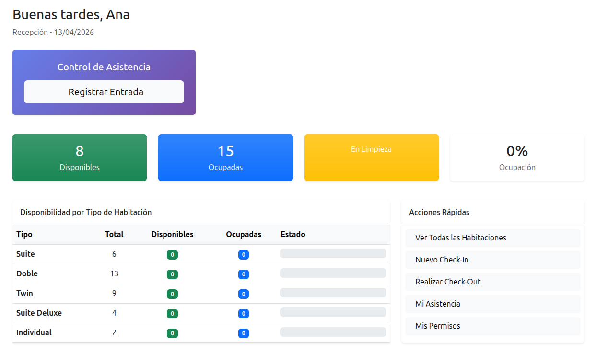
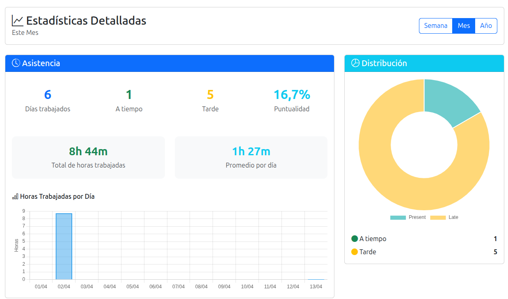

// 01 - DESCRIPCIÓN
¿De qué trata?
EL PROBLEMA
En muchos hoteles pequeños y medianos la coordinación entre departamentos sigue siendo manual: papel, bolígrafo y el recepcionista de turno como único nexo de información entre limpieza, mantenimiento y dirección. Un familiar que trabaja en un hotel me trasladó esta situación, y mi experiencia previa trabajando en un hotel en Edimburgo me permitió entender de primera mano los cuellos de botella operativos: tareas de limpieza que no se asignan a tiempo, incidencias de mantenimiento que se pierden, y fichajes de entrada y salida que nadie registra de forma fiable.
LA SOLUCIÓN
Diseñé y desarrollé una intranet de gestión hotelera completa con Django, modelando 8 roles reales de empleado (desde director hasta personal de mantenimiento), cada uno con su propio dashboard y permisos específicos. La arquitectura sigue el patrón MVT de Django con renderizado en servidor, una decisión deliberada: para una herramienta interna sin necesidad de API pública ni frontend desacoplado, Django MVT ofrece rapidez de desarrollo, menor complejidad en el despliegue y una curva de mantenimiento más baja que una solución con DRF + SPA.
Decisiones técnicas clave:
- Control de acceso por roles con permisos granulares por vista, no solo por modelo. Cada perfil ve y puede hacer exactamente lo que le corresponde.
- Señales de Django (post_save) para la creación automática de perfiles de empleado, con exclusión explícita de superusuarios tras detectar un bug en producción que bloqueaba la aplicación.
- Constraint UniqueConstraint condicional en PostgreSQL para garantizar que un empleado no pueda tener dos fichajes abiertos simultáneamente.
- Separación de settings en base.py, development.py y production.py con variables de entorno gestionadas por python-decouple.
- Despliegue en Digital Ocean con uWSGI + Nginx gestionado por CloudPanel, incluyendo certificado SSL con Let's Encrypt.
// 02 - DEMO
Pruébalo.
VER DEMO EN VIVO ->
Datos demo de acceso:
| Departamento |
Rol |
Usuario |
Contraseña |
| Dirección |
Director |
director |
demo123 |
| Recursos Humanos |
Responsable RRHH |
rrhh |
demo123 |
| Recepción |
Jefe de Recepción |
jefe.recepcion |
demo123 |
| Recepción |
Recepcionista |
recepcion1 |
demo123 |
| Recepción |
Recepcionista |
recepcion2 |
demo123 |
| Limpieza |
Jefe de Limpieza |
jefe.limpieza |
demo123 |
| Limpieza |
Camarera de pisos |
limpieza1 |
demo123 |
| Limpieza |
Camarera de pisos |
limpieza2 |
demo123 |
| Limpieza |
Camarera de pisos |
limpieza3 |
demo123 |
| Mantenimiento |
Jefe de Mantenimiento |
jefe.mantenimiento |
demo123 |
| Mantenimiento |
Técnico de Mantenimiento |
mantenimiento1 |
demo123 |
| Mantenimiento |
Técnico de Mantenimiento |
mantenimiento2 |
demo123 |
// 02 - STACK
Tecnologías utilizadas.
- Python
- Django
- PostgreSQL
- Bootstrap 5
- Chart.js
// 03 - CAPTURAS
El proyecto en imágenes.
Dashboard de un supervisor:

Dashboard del staff:
Estadísticas personales:

01
Conflicto entre señales de Django y el superusuario
Al resetear la base de datos y recrear el superusuario, la señal post_save asociada al modelo User intentaba crear automáticamente un perfil Employee para él, provocando un error que bloqueaba la aplicación.
Lo resolví añadiendo una condición en el handler para excluir a los superusuarios del proceso de creación automática (if not instance.is_superuser).
02
Integración de Chart.js con datos del servidor
Necesitaba mostrar estadísticas de asistencia de forma visual y nunca había usado ninguna librería de gráficos. El reto principal fue pasar datos desde las vistas de Django a JavaScript: los diccionarios y listas de Python no se pueden inyectar directamente en el template, sino que requieren serialización con json.dumps() para que Chart.js los interprete correctamente.
El resultado fueron gráficas interactivas integradas en los dashboards de cada rol.
03
Interferencia de señales en el entorno de tests
Al ejecutar los tests unitarios, la señal post_save disparaba la creación automática de un Employee sin departamento asignado, provocando un IntegrityError porque el campo department no admite NULL.
La solución fue desconectar la señal en setUpClass() y reconectarla en tearDownClass(), aislando los tests de efectos secundarios y permitiendo crear los objetos de prueba con control total sobre sus dependencias.
04
Fichajes huérfanos que bloqueaban nuevos registros
Registros de asistencia de sesiones anteriores que nunca recibieron check_out impedían que los empleados pudieran fichar de nuevo, porque un UniqueConstraint condicional garantiza que solo pueda existir un fichaje abierto por empleado.
Este problema me enseñó a diseñar la lógica de negocio pensando en estados inconsistentes reales, no solo en el flujo ideal. También me obligó a alinear los filtros de la vista con la validación del modelo para que la interfaz reflejara correctamente el estado real de los datos.
05
Despliegue en producción con CloudPanel y Let's Encrypt
El despliegue en Digital Ocean presentó varios problemas encadenados: disco lleno en el droplet de 10GB, archivos estáticos devolviendo 403/404 porque CloudPanel esperaba una estructura de directorios específica, y el certificado SSL fallando porque Nginx redirigía todo el tráfico HTTP a HTTPS antes de que Let's Encrypt pudiera verificar el dominio.
Resolverlo requirió entender la cadena completa: separar los bloques HTTP y HTTPS en el vhost de Nginx, crear enlaces simbólicos para los estáticos, y liberar espacio eliminando caché de paquetes innecesarios.
{kind=link}
{kind=link}